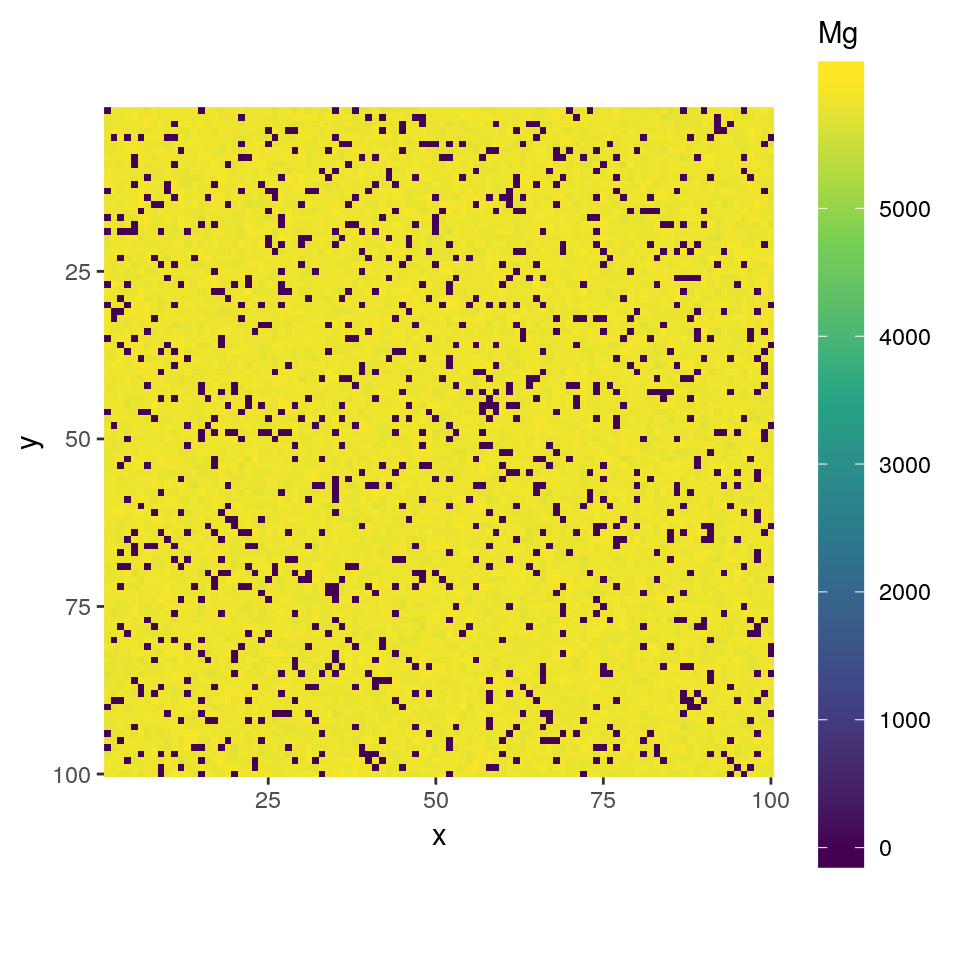

This document introduces a basic procedure of analysis using qntmap package with example data.
Prepare EPMA data following “Read me”.
See doi:am-2018-6323CCBY for implementations.
file.copy(
from = system.file('extdata', 'minimal', package = 'qntmap'),
to = wd,
recursive = TRUE
)
#> [1] TRUETRUE indicates copying is successful. Check copied files by dir().
dir(file.path(wd, 'minimal'), recursive = TRUE, all.files = TRUE)
#> [1] ".map/1/0.cnd" ".map/1/1_map.txt" ".map/1/1.cnd"
#> [4] ".map/1/2_map.txt" ".map/1/2.cnd" ".qnt/.cnd/elemw.cnd"
#> [7] ".qnt/bgm.qnt" ".qnt/bgp.qnt" ".qnt/elem.qnt"
#> [10] ".qnt/elint.qnt" ".qnt/mes.qnt" ".qnt/net.qnt"
#> [13] ".qnt/pkint.qnt" ".qnt/stg.qnt" ".qnt/wt.qnt"
#> [16] "conditions_qnt.csv" "conditions_xmap.csv" "README.md"# Read X-ray mapping data
xmap <- read_xmap(dir_map)
# Read spot analysis data
qnt <- read_qnt(dir_qnt, renew = TRUE)The example data contains olivine and quartz in the mapping area. The phases are quantified 20 points each.
Plots are interactive with Web UI. Elements can be chosen by mouse actions.
plot(xmap)
# A following plot is non-interactive mode run by
# plot(xmap, 'Mg', interactive = FALSE)
This step guesses initial cluster centers (i.e., mean mapping intensities of each phase). Check if results are adequate by comparing them with plots. If inadequate, consider modifying values
A result is saved as a binary file and PNG images in clustering directory below the directory containing mapping data.
For a quick look, plot() function is also available.
summary() function gives abundance ratios of phases in the map.
summary(qmap)
#> Element Min. 1st Qu. Median Mean 3rd Qu. Max.
#> 1 SiO2 40.39 42.32 42.80 48.43 43.35 102.81
#> 2 MgO 0.00 56.46 57.10 51.49 57.68 59.87
#> 3 Total 96.28 99.23 99.94 99.92 100.61 104.20
#>
#> Note that Total is not sum each columnNote also that this summary does not correct densities of phases.
According to compositions of olivine (57.29% MgO and 42.71 wt% SiO2), and of quartz (100% SiO2),
\[ E(MgO^{bulk}) = 57.29 \times 0.9 + 0 \times 0.1 = 51.561 \simeq 51.49 \mathrm{,} \]
and
\[ E(SiO^{bulk}_{2}) = 42.71 \times 0.9 + 100 \times 0.1 = 48.439 \simeq 48.43 \mathrm{,} \]
the above summary is adequate.
A simple use of mean() function returns mean() values of each elements.
Further, by using PNG format mask image width and height are same as mapping data, mean() values of each element are calculated for each area with same colors in the mask image.
Let’s use an image from cluster analysis above.
Input path to the image to segment function.
Then, input the result of segment() to index parameter of mean().
mean(qmap, index = i)
#> Element #000000 #FFFFFF
#> 1 SiO2 42.71445 99.91755
#> 2 MgO 57.21048 0.00000
#> 3 Total 99.92493 99.91755
# mean(qmap, index = cluster$cluster)Note that index parameter can be given as a character vector indicating which pixel is which phase. Thus, giving index = cluster$cluster results more friendly result than the above.
mean(qmap, index = cluster$cluster)
#> Element Ol Qtz
#> 1 SiO2 42.71445 99.91755
#> 2 MgO 57.21048 0.00000
#> 3 Total 99.92493 99.91755The above two mean() values are equivalent as black (#000000) corresponds to olivine cluster, and white (#FFFFFF) to quartz cluster.
This feature is useful to find average compositions of each minearls, local bulk compositions of domains (layer, symplectite), and so on.